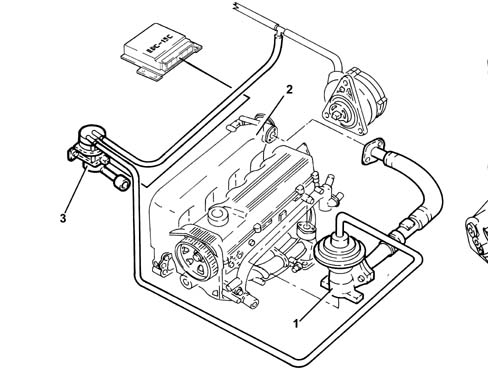
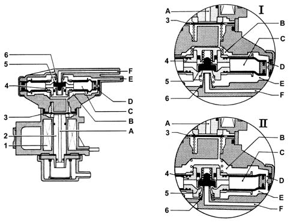
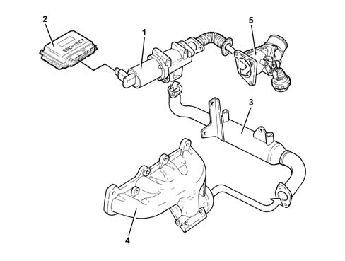
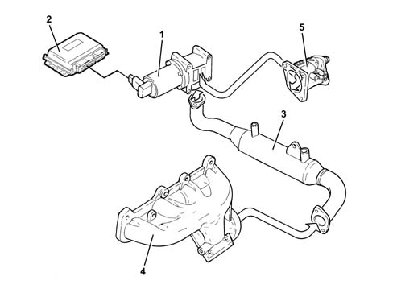
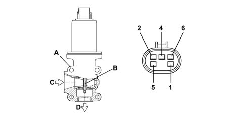
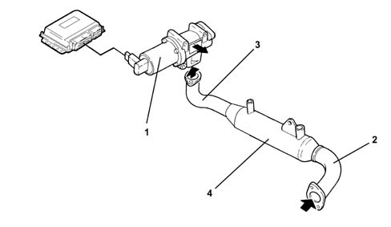

1080C exhaust gas recirculation system (e.g.r.)
- Path
- Descriptions > 10 ENGINE > 1080 EXHAUST EMISSION CONTROL SYSTEM > 1080C exhaust gas recirculation system (e.g.r.)
- Kind
- system description
- Applies to
- engines: 1.9 JTD 8v , 1.9 JTD 16v, 2.4 JTD 10v, 2.4 JTD 20v; all production periods
- Interactive page
- https://sloeber94.github.io/elrnDB-a156/en/#/3232882
Applies to: engines: 1.9 JTD 8v , 2.4 JTD 10v; all production periods
The system is equipped with an E.G.R. valve (1) in order to reduce the NOx (nitrogen oxide) emissions still further.
The E.G.R. (Exhaust Gas Recirculation) valve carries out the function of taking some of the exhaust gases and returning them to the inlet chamber (2).
The E.G.R. valve is operated by the vaccum modulated by the solenoid valve (3) controlled by the injection control unit.

Vacuum modulator solenoid
Operation
The vacuum arrives at chamber E from duct F (case I) because the force of the spring (6) acts on the moving element (4) and the deviation valve (5) allows it to pass.
The vacuum then reaches chamber B and the surface of the shutter (3), via the compensation port D.
When the forces acting on the disc (3) are balanced, the atmospheric pressure in duct A enters chamber B, moving the moving element downwards (case II) therefore the valve (5) shutter closes duct F and places chamber E in contact with chamber C, which is at atmospheric pressure, decreasing the value of the vacuum in duct E.
The decreased vacuum value or the increased absolute pressure in chamber E raises the moving element (4) again (case I), closing port C and placing the valve (5) in the ideal condition (E in contact with F) and the cycle is repeated.

For operating checks see test 1080C exhaust gas recirculation system (e.g.r.) .
Applies to: engines: 1.9 JTD 8v , 2.4 JTD 10v; all production periods; only with equipment: Euro 3
OPERATION
The system is equipped with an E.G.R. valve (1) in order to reduce the NOx (nitrogen oxide) emissions still further.
The E.G.R. valve is controlled by the fuel injection control unit, and carries out the function of re-injecting into the engine intake some of the exhaust gases drawn from the exhaust manifold.
A heat exchanger (3) permit partial cooling of the exhaust gases, increasing the volumetric output of the engine.

1 - E.G.R. valve 2 - Engine control unit 3 - Heat exchanger 4 - Exhaust manifold 5 - Throttle body
Applies to: engines: 1.9 JTD 16v; all production periods
CONSTRUCTION FEATURES
This system directs a proportion of exhaust gases (5 - 15%) to the intake under certain service conditions.
This lowers the temperature peak in the combustion chamber to reduce the formation of nitrogen oxides (NOx).
The E.G.R. valve (1) is controlled by the fuel injection control unit (2), and carries out the function of re-injecting into the engine intake some of the exhaust gases drawn from the exhaust manifold (4).
A heat exchanger (3) allows the partial cooling of the exhaust gases, further lowering the temperature in the combustion chamber.

1 - E.G.R. valve 2 - Fuel injection control unit 3 - Heat exchanger 4 - Exhaust manifold 5 - Throttle body
OPERATION
The fuel injection control unit, with coolant temperature > 20° C and engine speed of between 800 and 3000 rpm, drives the E.G.R. solenoid with a square-wave signal.
The change in this signal allows the EGR coil to move a plunger and thus adjust the flow of burnt gases from the exhaust manifold to the intake manifold; two results are thus obtained:
- less air is introduced;
- combustion temperature is reduced (due to the presence of inert gases) to reduce NOx (nitrogen oxide) production.
The engine control unit is kept constantly informed of recirculated gas quantity by information from the flow meter. If the intake of a certain amount of air (Qam) rpm is required at a certain rpm and the amount sent by the flow meter (Qar) is less, the difference (Qgr) is the recirculated gas quantity.
Qam - Qar = Qgr
Qam - Theoretical air quantity in memory
Qar - True air quantity
Qgr - Recirculated gas quantity
The atmospheric pressure signal is used when controllling the EGR valve to recognize when the car is driving at altitude and so reduce the quantity of recirculated gas and prevent the engine from producing fumes.
COMPONENT DESCRIPTION
E.G.R. SOLENOID VALVE
The Pierburg EGR valve fitted to the intake manifold modulates the flow of exhaust gas to the intake according to a command received from the injection control unit.
Modulation takes place via an internal solenoid controlled in PWM by the control unit, which operates the control rod from the internal valve.

A - E.G.R. valve body B - Internal valve C - Gas outlet from exhaust manifold D - Gas outlet to intake manifold 1 - Solenoid positive 2 - 5V potentiometer power supply 4 - Potentiometer negative 5 - Solenoid negative 6 - Potentiometer position signal
Applies to: engines: 2.4 JTD 20v; all production periods
CONSTRUCTION FEATURES
This system directs a proportion (5+15%) of exhaust gases to the intake under certain service conditions.
This lowers the temperature peak in the combustion chamber to reduce the formation of nitrogen oxides (NOx).

COMPOSITION
The system consists of:
- Pierburg EGR solenoid valve (1);
- a pipe (2) connected to the exhaust manifold (from where the exhaust gases come);
- a pipe (3) connected to the E.G.R. solenoid valve body (through which the exhaust gases are introduced into the inlet changer);
- the water/exhaust gas heat exchanger (4).
OPERATION
When coolant temperature is > 20C and engine speed is between 800 and 3000 rpm, the engine control unit governs the EGR solenoid by means of a square wave signal.
The change in this signal allows the EGR coil to move a plunger and thus adjust the flow of burnt gases from the exhaust manifold to the intake manifold; two results are thus obtained:
- less air is introduced
- combustion temperature is reduced (due to the presence of inert gases) to reduce NOx (nitrogen oxide) production.
The engine control unit is kept constantly informed of recirculated gas quantity by information from the flow meter. If the intake of a certain amount of air (Qam) rpm is required at a certain rpm and the amount sent by the flow meter (Qar) is less, the difference (Qgr) is the recirculated gas quantity.
Qam - Qar = Qgr
Qam = theoretical air quantity in memory
Qar = true air quantity
Qgr = recirculated gas quantity
The atmospheric pressure signal is used when the controllling the EGR valve to recognize when the car is driving at altitude and so reduce the quantity of recirculated gas and prevent the engine from producing fumes.
EGR SOLENOID
Specifications
The Pierburg EGR valve fitted to the intake manifold modulates the flow of exhaust gas to the intake according to a command received from the injection control unit.
Modulation takes place via an internal solenoid controlled in PWM by the control unit, which operates the control rod from the internal valve.
1. EGR valve body 2. Internal valve 3. Gas inlet from exhaust manifold 4. Gas outlet from exhaust manifold 5. 5V potentiometer power supply 6. Potentiometer negative 7. Solenoid negative 8. Potentiometer positive signal